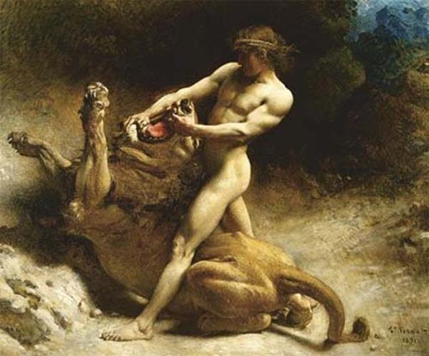

Thuở ấy ở Némée có một con sư tử to lớn hung dữ gấp mười lần con sư tử ở Cithéron. Bố nó chính là tên Đại khổng lồ Typhon, đã có lần quật ngã Zeus. Mẹ nó là Échidna, một con quỷ cái nửa người nửa rắn. Các anh em sư tử cũng đều là những loại ghê gớm cả. Nữ thần Héra đã nuôi con sư tử này và đem thả vào vùng Némée. Ác thú sống trong một cái hang có hai lối: một lối ra, một lối vào. Ngày ngày nó xuống đồng cỏ bắt gia súc, phá hoại mùa màng của nhân dân. Sư tử Némée còn khác sư tử Cithéron ở chỗ không cung tên, gươm dao nào đâm thủng, bắn thủng da nó được. Héraclès làm thế nào để trị được con quái vật này? Các vị thần luôn luôn theo dõi giúp đỡ người anh hùng. Thần Apollon cho chàng một cây cung và một ống tên. Thần Hermès cho chàng một thanh gươm dài và cong. Thần Héphaïstos rèn cho chàng một bộ áo giáp vàng. Còn nữ thần Athéna ban cho chàng một bộ quần áo do tự tay nàng dệt lấy vải may thành áo, thành quần rất đẹp. Đây là cây chùy gỗ tự tay chàng làm lấy trước khi đi diệt trừ ác thú ở Cithéron. Hồi ấy chàng tìm thấy một cây gỗ to và quý ở trong một khu rừng già. Cây gỗ rắn như sắt, chắc như đồng khiến chàng nghĩ tới có thể sử dụng nó làm một thứ vũ khí. Chàng bèn đốn cây chặt hết cành lá, chỉ lấy đoạn gốc để đẽo thành chùy. Chính với cây chùy này mà chàng hạ thủ được con sư tử Cithéron.
Nhưng lần giao đấu này với sư tử Némée không dễ dàng như lần trước. Héraclès phải tìm đến tận hang ổ của con vật. Chàng rình mò, xem xét thói quen, tính nết của nó rồi nghĩ kế diệt trừ. Sư tử Némée ở trong một cái hang có hai cửa, vì thế không dễ đón đánh được nó. Héraclès thấy tốt nhất là phải vít kín, phải lấp kín đi một cửa, buộc nó phải về theo một con đường nhất định. Và chàng mai phục ngay trước cửa hang. Chờ cho con vật ra khỏi hang, chàng giương cung bắn. Những mũi tên của chàng lao vút đi trúng liên tiếp vào thân con ác thú nhưng bật nảy ra và quằn đi như bắn vào vách đá. Không còn cách gì khác là phải lao vào con ác thú giao chiến với nó bằng gươm, bằng chùy. Nhưng đến gần nó thì thật là nguy hiểm. Héraclès thận trọng trong từng đòn đánh con vật, vì chỉ sơ hở một chút thì người anh hùng sẽ biến thành bữa ăn ngon miệng cho sư tử. Lừa cho ác thú vồ hụt, chàng vung gươm bổ một nhát trời giáng xuống đầu nó. Nhưng ghê gớm làm sao, thanh gươm bật nẩy như khi ta chém dao xuống đá. Da con vật chẳng hề xây xát. Héraclès dùng chùy. Chàng hy vọng nện liên tiếp vào đầu nó thì nó sẽ không thể còn sức mà giao đấu với chàng. Nhưng chàng không thể nào nện liên tiếp vào đầu con vật. Chàng còn phải tránh những đòn ác hiểm của nó như quật đuôi, vả trái, tát phải, nhẩy bổ, lao húc... Bây giờ thì chỉ còn cách vật nhau với nó. Héraclès lợi dụng một đòn tấn công hụt của ác thú, nhảy phắt lên lưng, cỡi trên mình nó, hai chân quặp lấy thân còn hai tay vươn ra bóp cổ, ấn đầu nó xuống đất. Con sư tử không còn cách gì đối phó lại được. Hai chân sau của nó ra sức đạp mạnh xuống đất để hất người ngồi trên lưng nó xuống, nhưng vô ích. Còn hai chân trước của nó chỉ biết cào cào trên mặt đất. Trong khi đó thì đôi bàn tay của Héraclès, như đôi kìm sắt thít chặt lấy cổ họng nó, khiến nó ngạt thở phải há hốc mồm ra và hộc hộc lên từng cơn. Chẳng bao lâu thì con thú yếu dần, cuối cùng chỉ còn là một cái xác. Thế là Héraclès vượt qua được một thử thách, lập được một chiến công kỳ diệu. Chàng muốn lột lấy bộ da sư tử làm áo giáp, dùng đầu sư tử làm mũ đội. Nhưng chẳng dao nào rạch được trên da con vật. Héraclès lấy luôn móng sắc con vật thay dao. Và chàng mặc bộ áo của chiến công ấy, đội chiếc mũ của vinh quang ấy, trở về Mycènes báo công với nhà vua Eurysthée. Với bộ áo bằng da sư tử Némée, từ nay trở đi Héraclès trở thành vô địch, không vũ khí nào có thể làm chàng đứt thịt rách da.

Đứng trên bờ thành cao nhìn xuống, Eurysthée thấy Héraclès trở về với y phục như thế thì sợ hãi quá chừng. Hắn ra lệnh cho Héraclès không được vào trong kinh thành, nhất là không được bén mảng đến gần cung điện. Cẩn thận hơn nữa, hắn còn ra lệnh từ nay trở đi những loại chiến lợi phẩm như thế phải để ngoài cửa ô, nghiêm cấm không được mang vào trong thành. Eurysthée lại còn giao luôn cho Héraclès một nhiệm vụ mới nữa, một nhiệm vụ nặng nề và nguy hiểm hơn: giết, thanh trừ con mãng xà Hydre ở Lerne.
Để ghi nhớ chiến công của người anh hùng Héraclès, nhân dân Hy Lạp sau này cứ hai năm một lần tổ chức Hội Némée ở thung lũng Némée thuộc đất Argolide. Hội mở vào giữa mùa hè thường kéo dài độ ba đến bốn ngày để tỏ lòng thành kính và biết ơn đối với thần Zeus. Sau cái nghi lễ tôn giáo là đến các trò thi đấu thể dục thể thao. Trong thời gian mở hội, các thành bang Hy Lạp tạm thời hòa hoãn các cuộc xung đột, các mối hiềm khích để vui chơi.